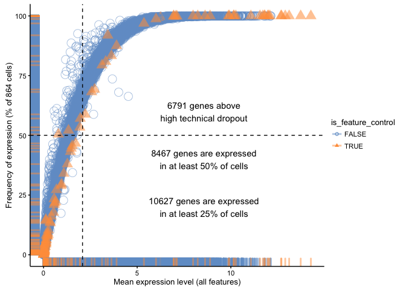
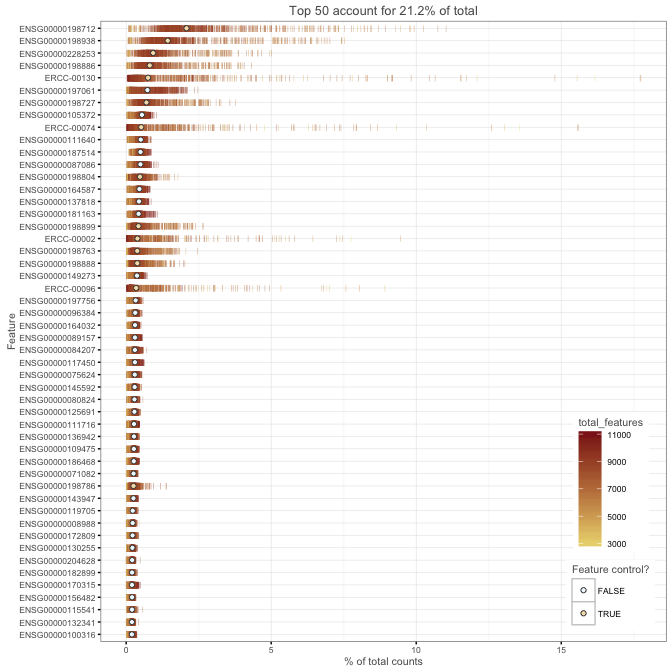
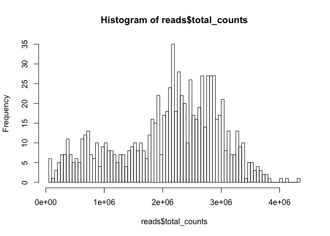
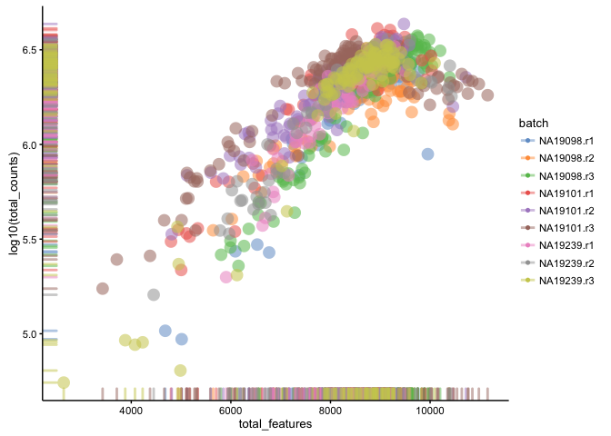
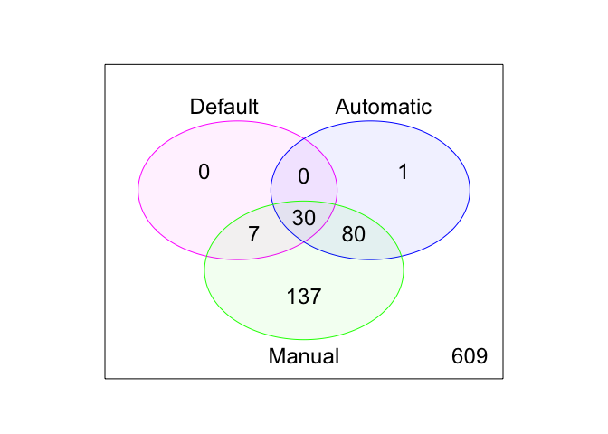

7 Expression QC (Reads)
| NA19098.r1.A01 | NA19098.r1.A02 | NA19098.r1.A03 | |
|---|---|---|---|
| ENSG00000237683 | 0 | 0 | 0 |
| ENSG00000187634 | 0 | 0 | 0 |
| ENSG00000188976 | 57 | 140 | 1 |
| ENSG00000187961 | 0 | 0 | 0 |
| ENSG00000187583 | 0 | 0 | 0 |
| ENSG00000187642 | 0 | 0 | 0 |
| individual | replicate | well | batch | sample_id |
|---|---|---|---|---|
| NA19098 | r1 | A01 | NA19098.r1 | NA19098.r1.A01 |
| NA19098 | r1 | A02 | NA19098.r1 | NA19098.r1.A02 |
| NA19098 | r1 | A03 | NA19098.r1 | NA19098.r1.A03 |
| NA19098 | r1 | A04 | NA19098.r1 | NA19098.r1.A04 |
| NA19098 | r1 | A05 | NA19098.r1 | NA19098.r1.A05 |
| NA19098 | r1 | A06 | NA19098.r1 | NA19098.r1.A06 |

Figure 7.1: Dropout rate vs mean expression

Figure 7.2: Number of total counts consumed by the top 50 expressed genes
| filter_genes | Freq |
|---|---|
| FALSE | 2445 |
| TRUE | 16281 |

Figure 7.3: Histogram of library sizes for all cells
| filter_by_total_counts | Freq |
|---|---|
| FALSE | 180 |
| TRUE | 684 |

Figure 7.4: Histogram of the number of detected genes in all cells
| filter_by_expr_features | Freq |
|---|---|
| FALSE | 16 |
| TRUE | 848 |

Figure 7.5: Library size vs number of detected genes

Figure 7.6: Percentage of counts in MT genes

Figure 7.7: Percentage of counts in ERCCs
| filter_by_ERCC | Freq |
|---|---|
| FALSE | 103 |
| TRUE | 761 |
| filter_by_MT | Freq |
|---|---|
| FALSE | 18 |
| TRUE | 846 |
| Var1 | Freq |
|---|---|
| FALSE | 37 |
| TRUE | 827 |
## The following cells/samples are detected as outliers:
## NA19098.r1.B10
## NA19098.r1.D07
## NA19098.r1.E04
## NA19098.r1.F06
## NA19098.r1.H08
## NA19098.r1.H09
## NA19098.r2.A01
## NA19098.r2.A06
## NA19098.r2.A09
## NA19098.r2.A12
## NA19098.r2.B01
## NA19098.r2.B11
## NA19098.r2.B12
## NA19098.r2.C04
## NA19098.r2.C09
## NA19098.r2.D02
## NA19098.r2.D03
## NA19098.r2.D09
## NA19098.r2.E04
## NA19098.r2.E07
## NA19098.r2.F01
## NA19098.r2.F11
## NA19098.r2.G01
## NA19098.r2.G05
## NA19098.r2.G10
## NA19098.r2.H01
## NA19098.r2.H07
## NA19098.r2.H08
## NA19098.r2.H12
## NA19098.r3.A05
## NA19098.r3.A07
## NA19098.r3.B02
## NA19098.r3.C07
## NA19098.r3.E05
## NA19098.r3.E08
## NA19098.r3.E09
## NA19098.r3.F11
## NA19098.r3.F12
## NA19098.r3.G02
## NA19098.r3.G03
## NA19098.r3.G04
## NA19098.r3.G11
## NA19098.r3.G12
## NA19098.r3.H08
## NA19101.r1.A01
## NA19101.r1.A12
## NA19101.r1.B01
## NA19101.r1.B06
## NA19101.r1.E09
## NA19101.r1.E11
## NA19101.r1.F05
## NA19101.r1.F10
## NA19101.r1.G01
## NA19101.r1.G06
## NA19101.r1.H04
## NA19101.r1.H09
## NA19101.r2.A03
## NA19101.r2.C10
## NA19101.r2.E05
## NA19101.r2.F02
## NA19101.r2.H04
## NA19101.r2.H10
## NA19101.r3.A02
## NA19101.r3.A03
## NA19101.r3.A05
## NA19101.r3.A09
## NA19101.r3.B05
## NA19101.r3.C01
## NA19101.r3.C09
## NA19101.r3.C12
## NA19101.r3.D01
## NA19101.r3.D04
## NA19101.r3.D07
## NA19101.r3.D09
## NA19101.r3.E08
## NA19101.r3.F09
## NA19101.r3.G09
## NA19101.r3.H01
## NA19101.r3.H03
## NA19101.r3.H07
## NA19101.r3.H09
## NA19239.r1.F05
## NA19239.r1.G05
## NA19239.r2.B01
## NA19239.r2.B03
## NA19239.r2.B10
## NA19239.r2.B11
## NA19239.r2.C03
## NA19239.r2.C06
## NA19239.r2.C08
## NA19239.r2.D07
## NA19239.r2.D09
## NA19239.r2.E09
## NA19239.r2.F04
## NA19239.r2.F06
## NA19239.r2.F07
## NA19239.r2.F12
## NA19239.r2.G03
## NA19239.r2.G08
## NA19239.r2.H02
## NA19239.r2.H03
## NA19239.r2.H07
## NA19239.r3.A01
## NA19239.r3.B09
## NA19239.r3.C04
## NA19239.r3.C07
## NA19239.r3.E01
## NA19239.r3.E03
## NA19239.r3.E12
## NA19239.r3.H02
## NA19239.r3.H10
## Variables with highest loadings for PC1 and PC2:
##
## PC1 PC2
## --------------------------------- ----------- ----------
## pct_counts_feature_controls 0.5057646 0.2473134
## pct_counts_top_100_features 0.4888852 0.2277068
## n_detected_feature_controls 0.0231277 0.6235516
## log10_counts_feature_controls -0.1226860 0.6576822
## total_features -0.4655518 0.2219694
## log10_counts_endogenous_features -0.5223679 0.1278782
Figure 7.8: PCA plot used for automatic detection of cell outliers
| Var1 | Freq |
|---|---|
| FALSE | 753 |
| TRUE | 111 |
| Var1 | Freq |
|---|---|
| FALSE | 254 |
| TRUE | 610 |

Figure 7.9: Comparison of the default, automatic and manual cell filters
## Features Samples
## 16281 610